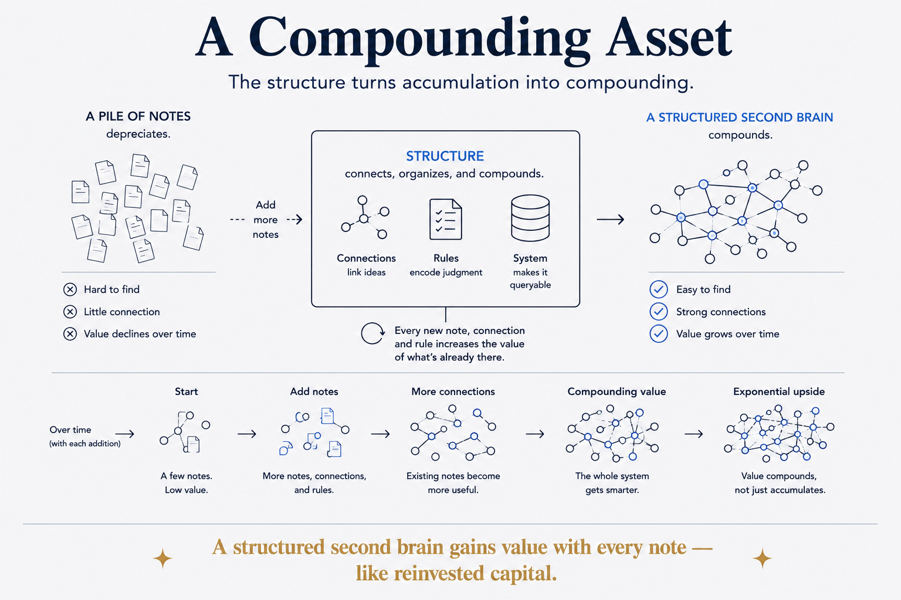

A structured second brain gains value with every note — like reinvested capital.

A pile of notes depreciates; a structured knowledge system compounds. Every new note, connection and rule increases the value of what's already there, the way reinvested returns build financial capital. The structure is what converts accumulation into compounding — the economic argument for Structure Beats Magic.
The distinction is exact, not poetic. Depreciation is what happens to unstructured accumulation: every note you add makes the pile marginally harder to search, and the note you wrote three years ago is worth less today than the day you wrote it, because you can no longer find it or trust it. Volume without structure is a liability that looks like an asset.
Compounding runs the other way, and for the same reason interest does: each addition earns on the whole balance, not just on itself. A new note in a structured system doesn't only add its own content — it connects to what's already there, and in doing so raises the value of everything it touches. The hundredth note is worth more than the first, because there's more for it to connect to.
Which reframes the effort question honestly. Structure feels like overhead at note ten, because at note ten the balance is small and the interest is invisible. It pays at note five hundred, on a question you couldn't have asked at note ten. That's not a reason to over-build early — it's a reason to be deliberate early, because compounding only ever runs on what you actually deposited.